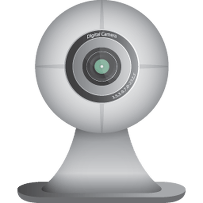

Camerele Digitale sunt Dispozitive Periferice de Intrare folosite pentru a Captura Imagini și Video
- Istoria Camerei Digitale
-
- Prima camera digitala a fost dezovoltata in 1975.

- Camerele digitale moderne au devenit populare la începutul anilor 2000.

- Tipuri de Camere Digitale
-
- Camerele DSLR folosesc un sistem de oglinzi pentru a redirecționa lumina din obiectiv către senzor.

- Camerele mirrorless nu au sistem de oglinzi, ceea ce le face mai compacte și mai ușoare.

apasa pe buton pentru a inregistra un sunet,care poate fi downloadat dupa ce e inregistat